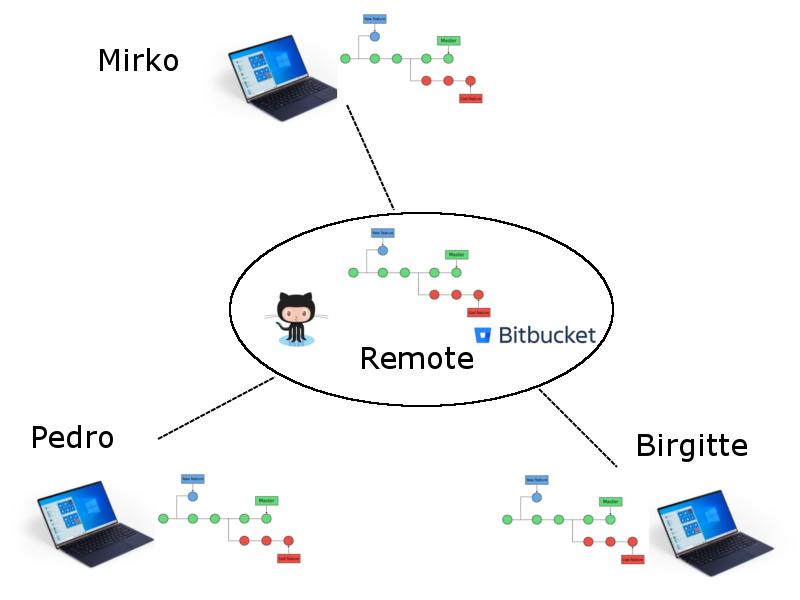
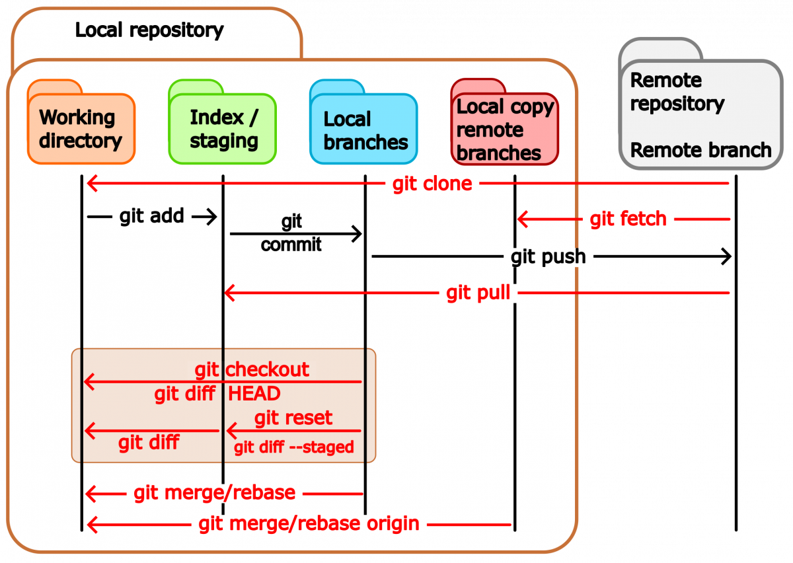

Lecture 6: Working with remotes¶
Concepts¶
A remote repository is a version of the project which can be hosted in your local machine, some network, or over the internet (Pro Git, 2nd. Ed., Scott Chacon and Ben Straub) where you and your collaborators can push or pull code modifications.
In addition to this, a remote is a way to backup your repository.

Updated scheme for file stages¶

Concepts cont.¶
The command
$ git remote -v
origin git@bitbucket.org:arm2011/gitcourse.git (fetch)
origin git@bitbucket.org:arm2011/gitcourse.git (push)
displays the remotes that are already set up where you can fetch and pull changes. In this case there is only a single remoted called origin.
$ git graph
* 2e56d0a (HEAD -> main, origin/main, origin/HEAD) text of exercise git diff usage
* 22a7316 Adding yet more lectures
* 0ddb791 Adding some more of the lectures
* 3ff9f8f Adding some of the lectures
Adding remotes¶
A remote repository can be added manually with the command
$ git remote add remote_name location
$ git remote add remote_name git@github.com:aliceuser2020/my-first-project.git
$ git remote -v
remote_name git@github.com:aliceuser2020/my-first-project.git (fetch)
remote_name git@github.com:aliceuser2020/my-first-project.git (push)
where the location of the remote can be an URL or the path if that is in your local machine.
Protocols: - local -> git clone /opt/git/project.git - SSH -> git clone ssh://user@server:project.git - HTTP -> git clone http://example.com/gitproject.git - Git
Why do we need more than one remote?
digraph {
rankdir=TD
S [style=invis]
"Bob repo" [shape=diamond]
"Alice fork" [fixedsize=circle]
"Alice fork" -> "Alice local"
"Bob repo" -> "Alice fork"
"Alice local" -> "Bob repo" [style=dashed]
orig [label="origin" shape=plaintext fontcolor=red]
orig -> "Alice fork" [style=dashed color=red]
ups [label="upstream" shape=plaintext fontcolor=red]
ups -> "Bob repo" [style=dashed color=red]
}
$ git remote add upstream git@github.com:bob/my-first-project.git
$ git remote -v
origin git@github.com:aliceuser2020/my-first-project.git (fetch)
origin git@github.com:aliceuser2020/my-first-project.git (push)
upstream git@github.com:bobuser2020/my-first-project.git (fetch)
upstream git@github.com:bobuser2020/my-first-project.git (push)
$git graph
* 2e56d0a (HEAD -> main, upstream/main, origin/main, origin/HEAD) text of exercise git diff usage
* 22a7316 Adding yet more lectures
* 0ddb791 Adding some more of the lectures
* 3ff9f8f Adding some of the lectures
Working with remotes¶
One can push or fetch/pull to or from remotes:
$ git push remote_name branch_name
$ git fetch remote_name branch_name
$ git pull remote_name branch_name
In case you obtained the repository by cloning an existing one you will have the origin remote. You can do push/fetch/pull for this remote with
or
because the remote origin and the master branch are configured for pushing and pulling by default upon cloning.
The command:
brings all the changes (branches) that are in the remote and tries to merge them with the current branch of the local repo. The default behavior of git pull (fetch part) is in the $GIT_DIR/config file:In fact, git pull is a combination of two commands:
If you want to fetch all branches and merge the current one:
Advanced¶
The command
will send the changes in the current branch to the remote by default.The default behavior can be seen with:
This can be changed by applying:If you have a brand-new branch called new, you can push it the first time with the command:
which is equivalent to
then, you will be able to push/pull the changes in the branch by simply typing git push/pull
Displaying remote information¶
$ git remote show origin
* remote origin
Fetch URL: git@bitbucket.org:arm2011/gitcourse.git
Push URL: git@bitbucket.org:arm2011/gitcourse.git
HEAD branch: master
Remote branches:
experiment tracked
feature tracked
less-salt tracked
master tracked
nested-feature tracked
Local branches configured for 'git pull':
feature merges with remote feature
master merges with remote master
nested-feature merges with remote nested-feature
Local refs configured for 'git push':
feature pushes to feature (fast-forwardable)
master pushes to master (up to date)
nested-feature pushes to nested-feature (up to date)
Renaming remotes¶
Deleting remotes¶
Bare repositories¶

A bare repository is a repository with no working directory.
Creating a bare repository¶
Cloning a bare repository cont.¶
Using GitHub¶

Upon login into your GitHub account you will see the following option to create a new repository

Here, you can choose the type of repository that is appropriate to your needs (public/private), if you want to add README and .gitignore files and also the type of license for your project,

GitHub will suggest some steps that you can take for your brand-new repository:


Setting ssh-keys¶
- ssh-keygen -t rsa -b 4096 -C “pedro@gemail.com”
- eval $(ssh-agent -s)
- ssh-add ~/.ssh/id_rsa
- clip < ~/.ssh/id_rsa.pub (it copies the ssh key that has got generated)
- Go to your remote repository on github.com and then Settings -> SSH and GPG keys ->new SSH key -> write a title and paste the copied SSH key and save it
- check if the key was properly set on github/bitbucket

Network visualization¶

Working with other’s repos¶
In the following scenario, a developer, Bob, has its repo on GitHub. Another developer, Alice, finds it useful. Alice can clone it but she cannot push changes unless Bob allows it:
digraph {
rankdir=LR
S [style=invis]
"Bob repo" [shape=rectangle]
"Alice cloned" [fixedsize=circle]
"Bob repo" -> "Alice cloned" [label="cloning"]
"Alice cloned" -> "Bob repo" [label="cannot commit" fontcolor=red style=dashed color=red]
}
A better approach is to fork Bob’s repository:
digraph {
rankdir=LR
S [style=invis]
"Bob repo" [label="Bob's repo (upstream)" shape=rectangle]
"Alice fork" [label="Alice's repo (origin)" fixedsize=circle]
"Alice local" [label="Alice local copy (PC/laptop)" color=darkgreen fontcolor=darkgreen]
"Alice fork" -> "Alice local" [label="cloning"]
"Alice local" -> "Alice fork" [label="can commit"]
"Alice local" -> "Bob repo" [label="cannot commit" fontcolor=red color=red style=dashed]
"Bob repo" -> "Alice fork" [label="forking"]
"Alice local" -> "Bob repo" [label="can request pulls" fontcolor=blue color=blue style=dashed]
}
Forking a repository¶
To fork a repository, Alice go to the URL of the target repository and use the option Fork in Bob’s repository:

Forking a repository¶
Then, Alice will see the forked repository on her user space:

After doing some changes, Alice push them to her forked repository but she wants Bob become aware of them (1 commit in this case, click on this commit)

Pull request¶
A pull request will be suggested:

You can then create a the PR:

Another way to create PR is with “Pull request” option:

Then, Bob receives an email with the pull request information about Alice modifications. On the GitHub site he sees the request:

Because Bob find the changes from Alice useful and there are no conflicts he can merge them,

Issues¶
If you find some issues in the files/code you can open an “Issue” on GitHub


You may also assign people to the issues that are more related to that topic.
In future commits you may refer to this issue by using the issue number, #2 in this case. This will allow you to track the evolution of the issue on GitHub.
Best practices¶
- Communicate with your colleagues.
- Some commands such as git rebase change the history. It wouldn’t be a good idea to use them on public branches.
- Don’t accept pull requests right away.